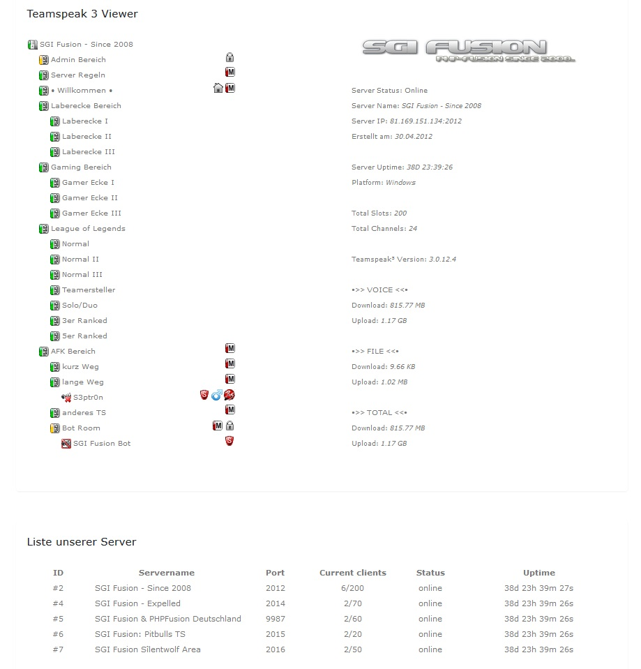
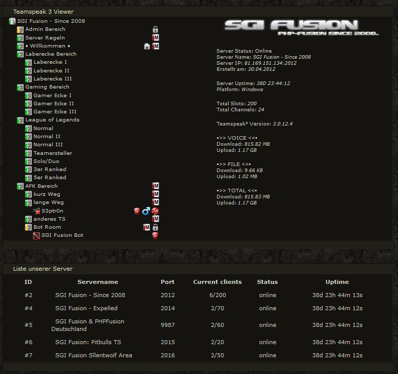
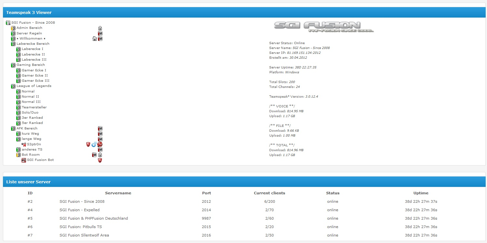
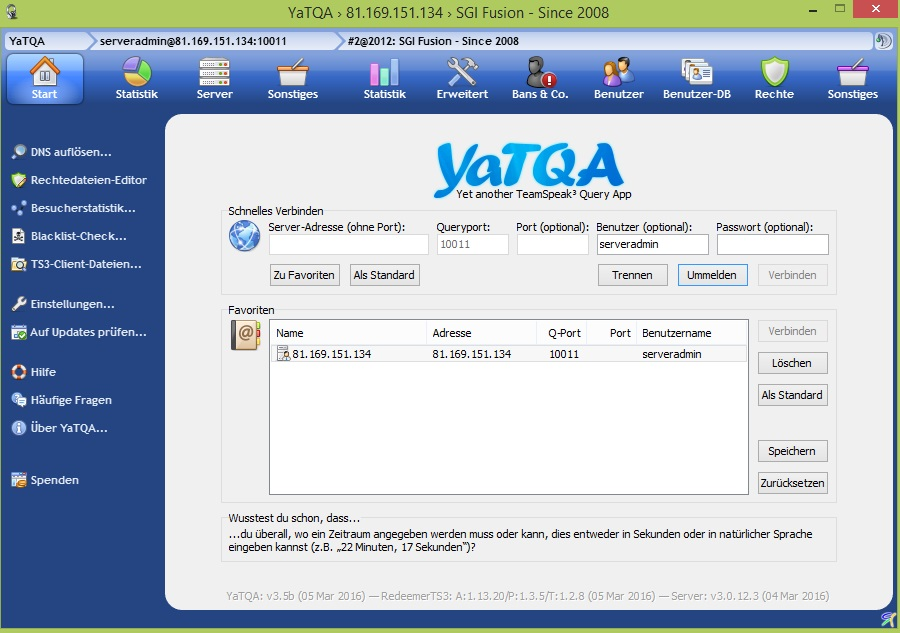
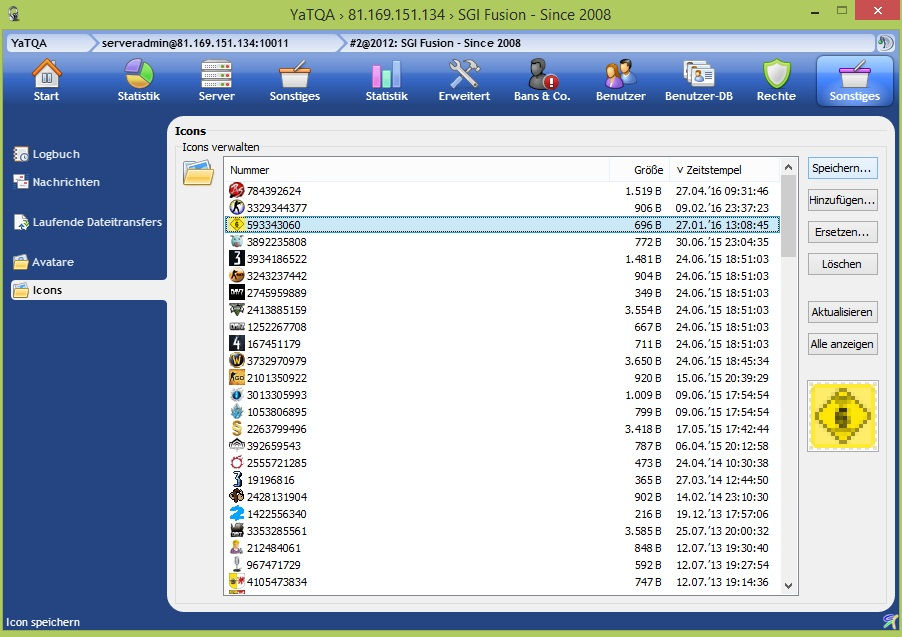

Lade die unter der Ordner files den Ordner administration und den Ordner infusions
in dein Hauptverzeichnis von PHP-Fusion hoch.
Gehe nun in deine Administration -> System -> Infusions
Instaliere -> Ts3_panel
dann rufe in deiner Administration folgendes auf Infusions -> Teamspeak 3
dort kannst du nun ein paar angaben machen
Host: IP oder link des TS3 Server
Query Port: ist in den meisten füllen immer 10011
Port: der Port deines TS3 Server (standart 9987)
Server ID: die ID eues TS3 Server (falls vorhanden)
Timeout: Ausführung in Sekunden (2 - 5 Empfohlen)
Admin Name: dein Querylogin für deinen TS3 Server (standart ist serveradmin)
Admin Passwort: dein Querypasswort
auf Speichern klicken Fertig.
nun kannst du unter System -> Seitenlinks
den Teamspeak 3 aufrufen wenn alle angaben richtig eingetragen worden sind
kannst du deinen Teamspeak 3 Server nun sehen mit einigen Informationen
Damit die Benutzer Icons richtig angezeigt werden, kannst du dies mit dem YaTQA
ergänzen (dieses bekommst du hier: YaTQA)
Wenn das Program Installiert und geöffnet ist gehe wie folgt vor:
Logge dich in deinem TS3 ein wähle den Server aus
Klicke auf Sonstiges und dann auf Icons
wähle dort das Fehlende Icon aus (meist als zahl definiert)
klicke auf speichern
Wie wird es abgespeichert ?
Hie ein Beipiel (Zahlendefinierung kann abweichen):
group_3959732973.png
dann das abgespeicherte Group Icon unter /infusions/ts3_panel/statusviewer/img/default
hochladen und nach einem oder zwei mal refreshen wird es angezeigt.
Das war es auch schon.
Hier sind Beispiel Screenshots:
Responsives Theme/Template:

Bearbeitetes Theme/Template von pmhome.at:

Stylo Theme/Template:

YaTQA Start:

YaTQA Sonstiges -> Icons:

Update Informationen
Derzeit keine weiteren geplant...
- TS3 PHP Framework von: Teamspeak.com oder planetteamspeak.com
- ts3admin.class von: ts3admin.info
- TSStatus: Teamspeak 3 viewer for php5 eine abgewandelte version von: tsstatus
umgewandelte version hier: TS3ServerStatusViewer
- YaTQA zugriff für die Server Group Icons